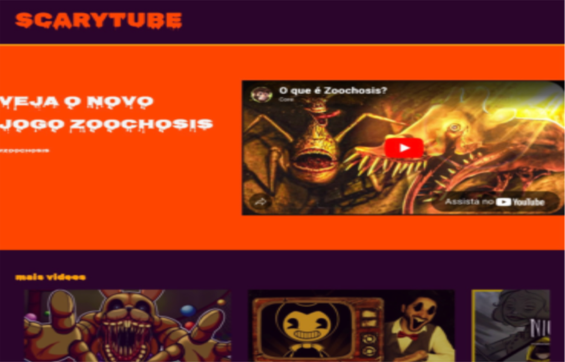
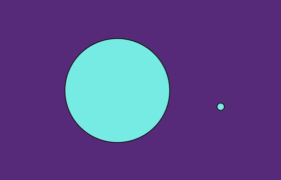
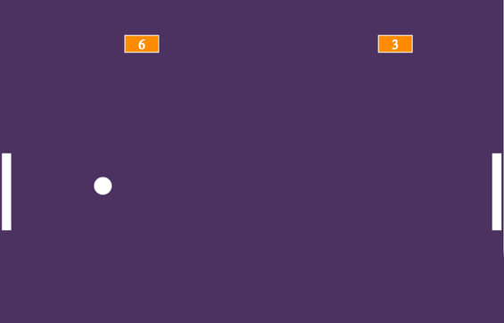

Meus projetos

Site de video: SCARYTUBE
Este projeto é o portal do medo, onde o terror não têm fim! O site contêm vários vídeos de mistérios, jogos de terror, gameplays, args, creepypasta, suspense e muito mais!

Site interativo: Quente e Frio
Um site interativo da famosa brincadeira Quente e Frio. Onde tem que encontrar a pequena bolinha, onde ela estará andando. E quando chegar mais perto, mais seu circulo diminui. Se divirta tentando encontrar!

Site de jogo: Ping-Pong
O ping pong digital é um jogo onde dois jogadores batem uma bola de um lado para o outro. O objetivo é fazer a bola encostar na parede do adversário para ganhar pontos. Se divirta tentando ganhar e seja o melhor!